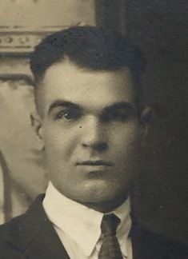

Two companies
By the middle of September both brothers had a company. They were about eight miles apart, and only one of them had any idea where the other might be.
David had belonged to Company D since Camp Lee. Alexander got a company on 15 September 1918, and it was not a Virginia one.
Company D, 317th Infantry — the Blue Ridge Division
The 80th Division was raised from Virginia, West Virginia and western Pennsylvania, and its men called themselves the Blue Ridge boys. Company D was drawn heavily from Southside Virginia — the final pay roll is full of Mecklenburg County addresses, including at least one other Chase City man, Robert B. Yancey, who had enlisted on the same day as David and was still with the company at the end.
David Bryant had been its First Sergeant since April. He had crossed with these men, trained with them and knew all their names.
Company L, 110th Infantry — the Keystone Division
Alexander was assigned to a Pennsylvania regiment. The 110th Infantry of the 28th Division had been the old 10th Pennsylvania of the National Guard, and by September 1918 it had been in France for months and in hard fighting for weeks.
He joined it as a replacement, three weeks before the events of this story, in a company of men who had known each other for years and had just lost a great many of their number. He was a twenty-two-year-old Virginian sergeant among Pennsylvanians.
The sergeant who ran Company L
On 16 September 1918, one day after Alexander arrived, a Pennsylvanian named William Kokos became the company’s First Sergeant.

Kokos was not a replacement. He was the company’s long-service man, three and a half years in the same unit, and he had come back to it on 17 September after seven weeks out of the line with a shrapnel wound in the right hip, taken on 29 July.
Eight miles of the same battle
On 26 September 1918 the American First Army attacked on a front running from the Argonne forest to the Meuse. Both brothers were on it.

Alexander almost certainly knew roughly where David was. David had been in France since June, with an organised division; the 80th was a Virginia division and its movements were the sort of thing a Southside family wrote about in letters. Alexander sailed six weeks later. He would have had a fair idea that his brother was somewhere on the Meuse side of the offensive with the Blue Ridge Division.
David almost certainly did not know where Alexander was. Alexander crossed as a replacement and was not assigned to Company L, 110th Infantry until 15 September — eleven days before the offensive opened. A letter carrying that news would have had to find a First Sergeant in the field in the last fortnight before the biggest American attack of the war. It is possible. There is no evidence it happened, and after 4 October he was in a hospital.
Apremont, 29 September
Three days into the offensive, Kokos was out in front of a town taken the day before, in command of a detachment of eighteen men. Reconnoitring after dark, he found the line had fallen back on both sides of him and left the detachment exposed.
In directing the detachment during this attack, at one time Sergeant Kokos was nearly surrounded by the enemy, but by his good judgment and coolness he kept his men well in hand, being able to extricate himself without the loss of any men of his detachment. Regimental General Orders No. 1, 110th Infantry, 19 May 1919
He brought all eighteen back. Two days later he was commanding Company L.